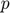
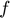
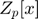
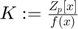
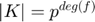
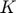
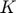

Contents
Inverso en un Cuerpo Finito
Dado  primo y  irreducible en  construimos  con  y calculamos el inverso de  en 
en 
path(path, 'Algorithms'); path(path, 'Classes'); clear
p = 7; f = [2 4 1]; g = [4 5]; Zpx = FiniteFieldPoly(p,1); fprintf("p = %i\n",p); fprintf("f(x) = %s\n",Zpx.gfshow(Zpx,f)); fprintf("g(x) = %s\n",Zpx.gfshow(Zpx,g)); inv = inverse(g,f,Zpx); % 2+3x fprintf("inv(g(x)) = %s\n", Zpx.gfshow(Zpx,inv));
p = 7 f(x) = 4 + 2x + 5x^2 g(x) = 2 + 3x inv(g(x)) = 2 + 3x
p = 7; f = [-Inf 5 1 0]; g = [5 -Inf 0]; Zpx = FiniteFieldPoly(p,1); fprintf("p = %i\n",p); fprintf("f(x) = %s\n",Zpx.gfshow(Zpx,f)); fprintf("g(x) = %s\n",Zpx.gfshow(Zpx,g)); inv = inverse(g,f,Zpx); % 5 + 1x fprintf("inv(g(x)) = %s\n", Zpx.gfshow(Zpx,inv));
p = 7 f(x) = 0 + 3x + 5x^2 + 1x^3 g(x) = 3 + 0x + 1x^2 inv(g(x)) = 5 + 1x